شبنم رضاپور
کسی که PDFها را راضی کرد محتوایشان را بیکموکاست لو بدهند.
این جزوه با استفاده از جزوهساز پاپیروس و به صورت خودکار تولید شده است. ممکن است شامل خطا یا برداشت نادرست باشد و نیازمند بررسی و بازبینی مجدد است.
خونسازی فرایند تولید، تکثیر و تمایز سلولهای پیشساز خونی است. کانونهای خونسازی در طول رشد از کیسهٔ زرده به کبد و سپس به مغز استخوان منتقل میشوند. در این درس، ریزمحیط مغز استخوان، homing و niche، چرخهٔ سلولی و self-renewal، شناسایی و زیرگروههای hematopoietic stem cell، مسیرهای تمایز ردههای خونی، محلهای نمونهگیری مغز استخوان و iPSCها بررسی میشوند.
کانونهای خونسازی در طول رشد بهترتیب عبارتاند از:
در حال حاضر، مغز استخوان تنها کانون خونسازی است، مگر آنکه وضعیت پاتولوژیک یا بیماری رخ دهد.
خونسازی در کیسهٔ زرده داخلعروقی است؛ اما پس از انتقال خونسازی به کبد، این فرایند بهصورت خارجعروقی انجام میشود. خونسازی در کیسهٔ زرده را primitive یا اولیه مینامند، زیرا در آن فقط سلولهای اریتروئیدی تولید میشوند. خونسازی در سایر ارگانها definitive است، زیرا همهٔ ردههای سلولی را تولید میکند.
برای تولید همهٔ ردهها، stem cellهای جدیدی در ناحیهٔ aorta-gonad-mesonephros یا به اختصار AGM تولید میشوند. این ناحیه در تشکیل آئورت، بخشی از کلیه و غدد جنسی جنین نقش دارد. این سلولها در همان ناحیه نیز خونسازی میکنند، اما در حداقل میزان. سپس stem cellها مهاجرت میکنند و به کبد میروند، زیرا شرایط خونسازی در کبد بهتر و قویتر است. اوج خونسازی کبد در ماههای 4 تا 6 دوران جنینی بوده و از آن پس تا بدو تولد رو به کاهش میرود.
کانونهای خونسازی شرایط و ریزمحیطی(microenvironment) دارند که به سلولها کمک میکند در مسیر درنظرگرفتهشده برای آنها مستقر شوند. از دید هماتولوژی، سلول مرکزی stem cell است و سلولهای نوپایی را میسازد که نسلهای بعدی آن هستند.
با ظاهر شدن حفرههای استخوانی جایگاه دائمی خونسازی در حدود 4ماهگی شکل گرفته و سلول مادر در کنار سلولهای استرومال مغز استخوان ساکن شده و شروع به خونسازی میکنند.
سلولهای استرومال با ترشح فاکتورهای رشد در کنترل خونسازی نقش دارند.
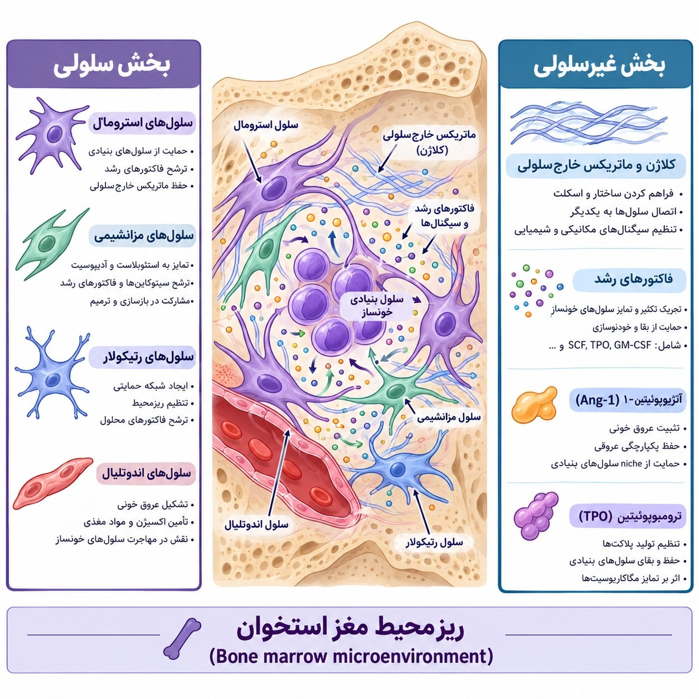
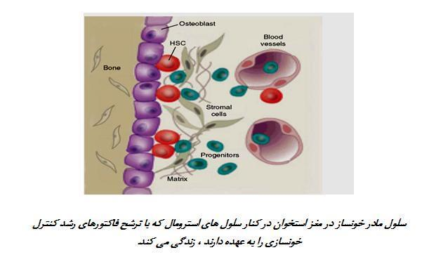
تصویر 1Osteoblast استخوانسازی میکند؛ یعنی ناحیهٔ سخت استخوان را میسازد. در تصویر، osteoblast یکی از اجزای ریزمحیط مغز استخوان است.
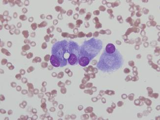
تصویر 2Osteoclast نیز در تصویر بهعنوان یکی از اجزای ریزمحیط مغز استخوان آمده است.
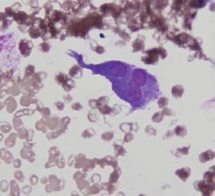
تصویر 3در مغز استخوان رگها نیز دیده میشوند. در آناتومی گفته میشود عروق خارجشده از قلب artery هستند و با نزدیکشدن به بافتها به arteriole، سپس venule و vein تبدیل میشوند. در مغز استخوان، arteryها وارد مغز استخوان میشوند و به arteriole تبدیل میشوند؛ اما بهجای تبدیلشدن به venule و vein، حالتی حوضچهمانند پیدا میکنند و به فضای گستردهای میرسند. به این فضاها sinusoid میگویند؛ یعنی حوضچه.
با تبدیل رگ به سلول های اندوتلیال، sinusoid که پیشتر رگ را میپوشاند، بسیار نازک و کشیده میشود. بنابراین، در مقطعی که در تصویر با عنوان blood vessels مشخص شده است، endothelial cell کشیده و بسیار نازک است. فاصلهٔ بین osteoblastها و این فضاها بسیار کم است و در نمای میکروسکوپی حتی از فاصلهای که در تصویر دیده میشود نیز کوچکتر است.
کل این فضا محل خونسازی است. در این فضا روزانه «۲ میلیارد گلبول قرمز، ۱ میلیارد گلبول سفید و ۱٫۵ میلیارد پلاکت» تولید میشود.
محلهای خونسازی در استخوانهای بزرگ عبارتاند از proximal end استخوانهای بزرگ، sternum، vertebrae و iliac crest. این استخوانها در نمای axial skeleton نیز نشان داده شدهاند.
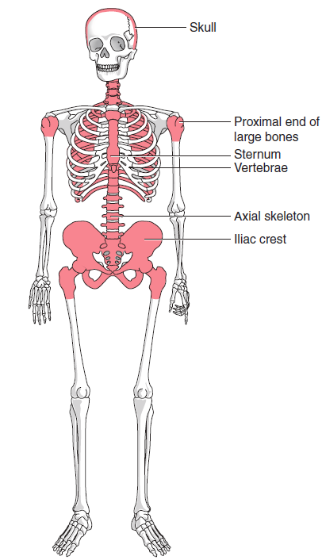
تصویر 5در پیوند مغز استخوان، کل مغز استخوان را برنمیدارند و به بیمار پیوند نمیزنند؛ بلکه سلولهای hematopoietic stem cell را جدا میکنند و داخل رگ بیمار تزریق میکنند. این سلولها در نهایت مسیر بازگشت به کانون خونساز مغز استخوان را پیدا میکنند؛ این پدیده homing نام دارد.
Hematopoietic stem cell به محل خود میرود و پس از استقرار در مغز استخوان، بین osteoblast و عروق خونسازی انجام میدهد. سلولهای این محیط با ترشح و راهنمایی، آن را به مسیرهای مختلف، از جمله erythroid، هدایت میکنند.
این ناحیه را microenvironment یا niche مغز استخوان مینامند. Hematopoietic stem cellها در خون نیز گردش میکنند، اما در خون خونسازی نمیکنند و برای خونسازی به مغز استخوان میروند. بنابراین، میتوان hematopoietic stem cell را از نمونهٔ خون جدا کرد، ولی حضور آن در خون به این معنا نیست که همانجا خونسازی انجام میدهد. وقتی hematopoietic stem cell به مغز استخوان میرسد، نخستین جایی که آن را میگیرد و به آن میچسباند osteoblast است؛ ازاینرو این ناحیه را niche مغز استخوان مینامند.
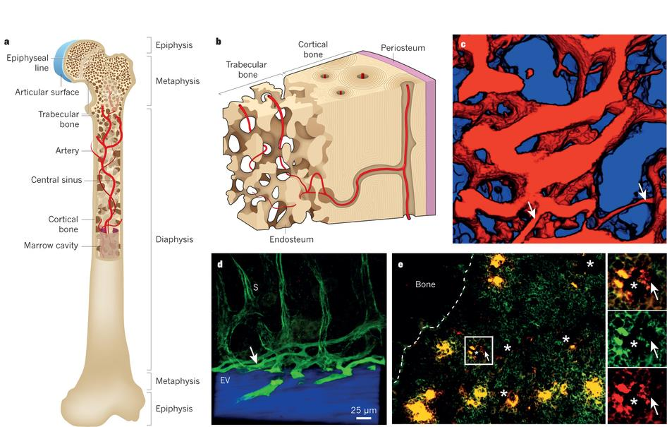
تصویر 4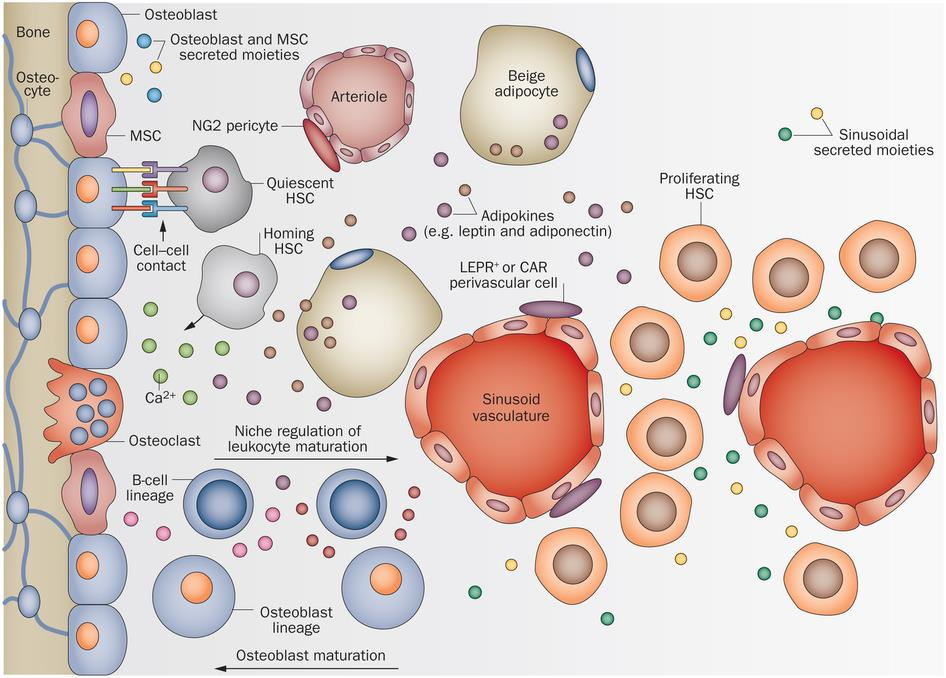
تصویر 6بخش محیطی ریزمحیط مغز استخوان از دو قسمت سلولی و غیرسلولی تشکیل شده است.
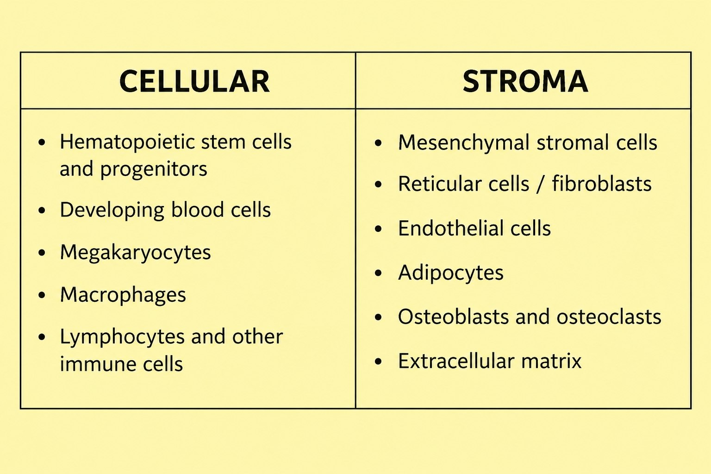
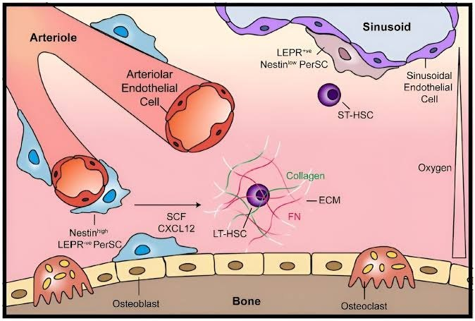
بخش سلولی را stromal cells یا سلولهای استرومال مینامند که شامل سلول های زیر میباشد:
این سلولها مستقیماً در خونسازی نقش ندارند، اما از آن حمایت میکنند. برای مثال، fibroblastها با ترشح پروتئینهایی مانند collagen، fibronectin و hemonectin و... داربستی برای قرارگیری HSC فراهم میکنند. HSC در فضای خالی قرار نمیگیرد؛ بنابراین بستری به نام scaffold یا داربست وجود دارد. این داربست پروتئینی است و سلول مادر خونساز روی آن قرار میگیرد تا بهصورت سهبعدی تحتتأثیر عوامل غیرسلولی باشد.
عوامل غیرسلولی مغز استخوان بخشی از فعالیت سلولهای استرومایی هستند. این سلولها با ایجاد ماتریکس و تولید فاکتورهای رشد در خونسازی نقش دارند؛ البته بعضی از فاکتورهای رشد از منابع سلولی دیگر تأمین میشوند.
برای نمونه، erythropoietin یا اریتروپویتین که به اختصار EPO نامیده میشود از سلولهای بافت بینابینی کنار لولههای کلیوی **(**peritubular interstitial) ترشح میشود. سازوکار بیانشده برای این پاسخ چنین است:
از ترکیبات و عوامل غیرسلولی مغز استخوان میتوان به موارد زیر اشاره کرد:
ترومبوپویتین، مانند erythropoietin، در تولید یک ردهٔ خونی نقش دارد: اریتروپویتین به تولید گلبول قرمز کمک میکند و thrombopoietin برای تولید پلاکت لازم است. Angiogenesis به معنی رگزایی است و نقش angiopoietin امروزه بسیار مورد توجه قرار گرفته.
در مغز استخوان integrinها و selectinها نیز وجود دارند. برای ارتباط سلولها گاهی اتصال محکم و گاهی اتصال سست برقرار میشود:
از این اتصالات در درمان نیز استفاده میشود. برای مثال، osteoblastها CXCL12 ترشح میکنند. برای نگهداشتن hematopoietic stem cell در محل، اتصال محکم لازم است. روی CXCR4، HSC وجود دارد که به CXCL12 متصل میشود. این ترکیبات پیامرسان chemokine نامیده میشوند. اتصال CXCR4 روی hematopoietic stem cell به CXCL12 محکم است؛ اگر این اتصال شکسته شود، hematopoietic stem cell از مغز استخوان جدا میشود و وارد خون میشود.
در بخش اهداکنندگان بیمارستان روز قبل از گرفتن سلولهای خونی از اهداکننده، دارو میزنند تا این اتصالها شکسته شود و hematopoietic stem cellها وارد خون شوند. سپس خون را میگیرند و stem cellها را جدا میکنند تا برای پیوند به کار بروند. فرد اهداکننده سلولهایش را دوباره میسازد. Hematopoietic stem cell و hematopoiesis مانند چشمهٔ جوشانی هستند که خشک نمیشود؛ و آن را میتوان به بیمار دیگری هدیه داد.
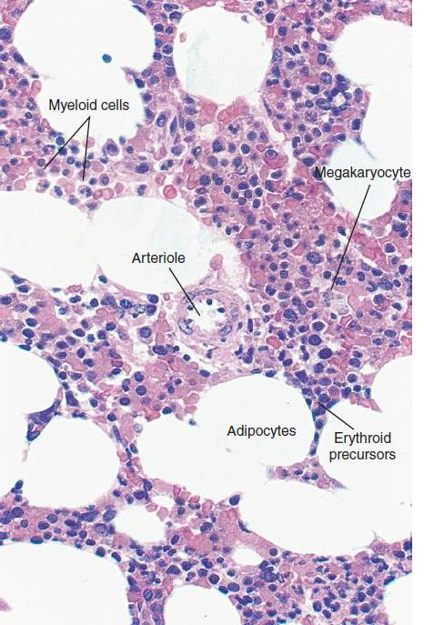
تصویر 7در تصاویر مغز استخوان، erythroid precursors نیز نشان داده شدهاند.
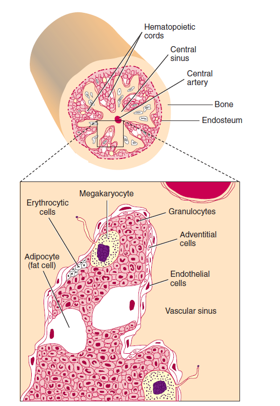
تصویر 8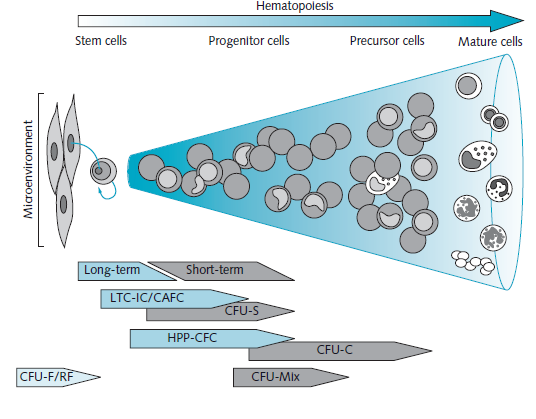
تصویر 9در hematopoiesis، سلول از Stem cells به Progenitor cells، سپس Precursor cells و در نهایت Mature cells میرسد. این فرایند در ارتباط با Microenvironment انجام میشود.
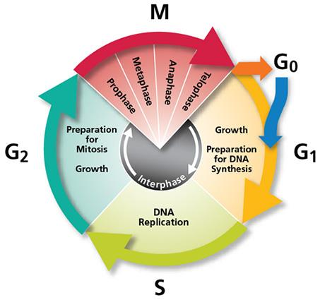
تصویر 10در تصویر مراحل آمادهسازی DNA، ابتدا Preparation for DNA Synthesis و سپس DNA Replication نشان داده شدهاند.
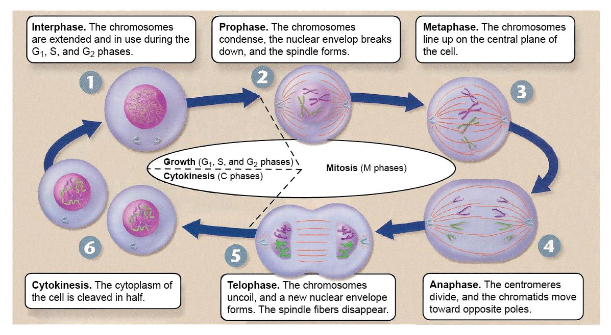
تصویر 11چرخهٔ سلولی شامل مراحل زیر است:
هر وقت hematopoietic stem cell بخواهد یکی از سلولهای خونی را تولید کند، ابتدا میتوز انجام میدهد: یک سلول مانند خودش میسازد و سلول دیگر بهسمت تمایز میرود. به این فرایند self-renewal یا خودنوسازی میگویند. یک سلول مانند خودش میسازد و در جای خود نگه میدارد و سلول دیگر تمایز پیدا میکند. به این ترتیب، چشمهٔ مغز استخوان خشک نمیشود و میتواند روزانه سلول تولید کند. Hematopoietic stem cell و بسیاری از progenitorها قابلیت self-renewal دارند.
خودنوسازی سلول مادر به دو شیوه متقارن(symmetric) و غیر متقارن (asymmetric) صورت میگیرد. در حالت متقارن سلول مادر به دو سلول شبیه بهم تبدیل میشود که هردو در مخزن ذخیره مغز استخوان قرار میگیرند ولی در حالت نامتقارن سلول مادر به دو سلول مادر دیگر تبدیل گردیده که یکی در ذخیره قرار گرفته و دیگری وارد چرخه تمایز و یا آپوپتوز میگردد. به عبارتی تقسیم نامتقارن با self-renewal همراه است و جمعیت سلولها را حفظ میکند.
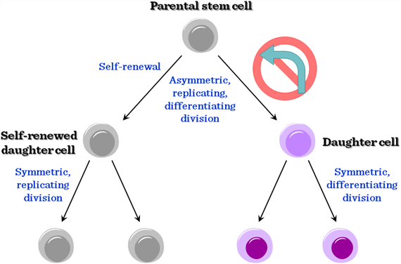
تصویر 17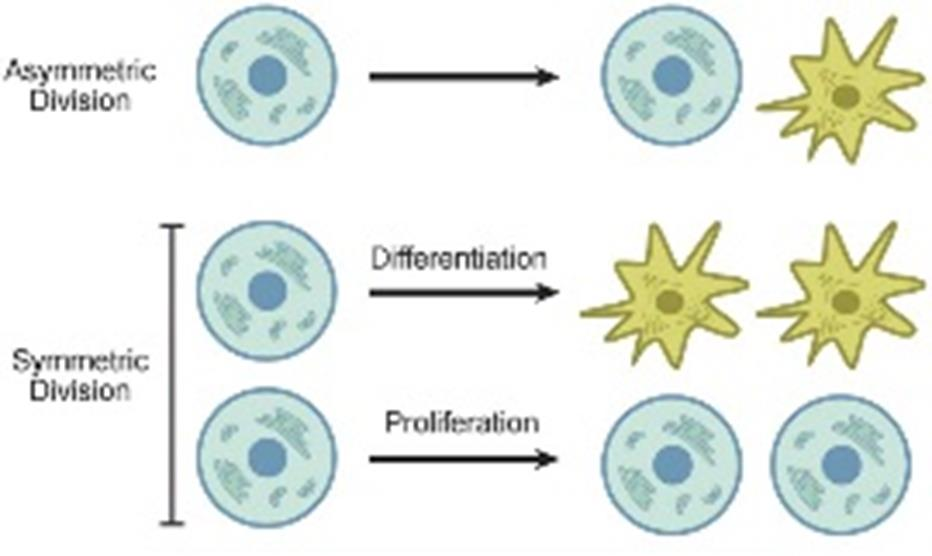
تصویر 18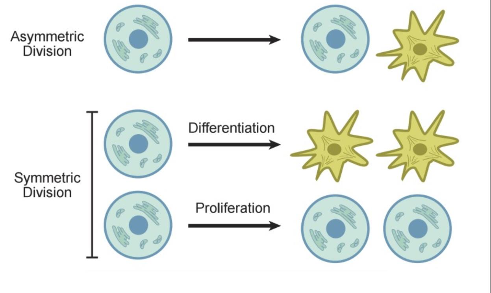
تصویر 19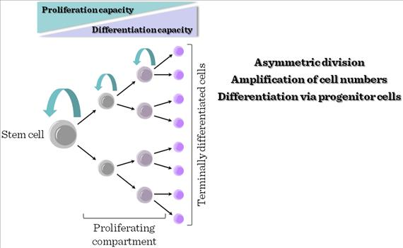
تصویر 20در درس گفته میشود هر سلولی که CD34 مثبت باشد، hematopoietic stem cell است. CD به مجموعهٔ پروتئینی اشاره دارد. این پروتئین ممکن است روی غشا، در سیتوپلاسم یا در هسته باشد، اما در هماتولوژی بیشتر با markerهای روی غشا سروکار داریم. روی غشای سلول markerی به نام CD34 وجود دارد. برای جداسازی سلولها از خون نیز سلولهای CD34 مثبت را جدا میکنند و برای پیوند به کار میبرند.
برای شناسایی سلولهای مادر خفته(quiescent) از رنگهای حیاتی Hoechst 33342 که DNA هسته را رنگآمیزی میکند و رنگ رودامین 123**(Rhodamine-123)** که میتوکندری را رنگ میزند استفاده میشود. مارکرهای CD34 اما این رنگها را پس میزند. در نتیجه سلول مادر اولیه به طور ضعیف رنگ میگیرد.
در hematopoietic stem cellها طیفی از سلولها وجود دارد. همه CD34 مثبتاند، اما برخی بسیار جواناند و برخی در مسیر تمایز قرار گرفتهاند:
برای پیوند مغز استخوان هم long-term و هم short-term را برمیدارند، اما برای شناسایی بهدنبال CD34 میگردند.
سلول جوان علاوه بر CD34، marker دیگری ندارد. با کمی تمایز، c-kit نیز مثبت میشود؛ نام دیگر c-kit، CD117 است. پس از آن، علاوه بر CD34 و c-kit، مارکر FLT3 هم مثبت میشود. با تمایز بیشتر، CD38 روی سلول ظاهر میشود. بنابراین، سلولهای CD34 مثبت یا HSC در مغز استخوان یک طیف را تشکیل میدهند؛ LT-HSC و ST-HSC در این طیف قرار دارند و سپس سلولها بهسمت ردههای مختلف خونی میروند.
اسلاید markerهای سطحی پیشنهادی برای primitive hematopoietic stem cells را جداگانه برای Human و Mouse فهرست میکند. نامهای خوانا عبارتاند از:
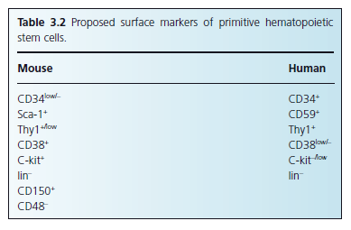
تصویر 12در نمودار دیگری برای Human و Murine، markerهایی مانند L-selectin، PECAM، Kit، α4 و c-mpl و نیز Lineage negative دیده میشوند.
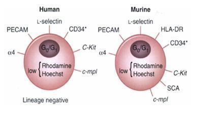
تصویر 13در اسلاید، فنوتیپهای زیر برای زیرگروههای سلولی آمدهاند:
| زیرگروه | فنوتیپ ذکرشده |
|---|---|
| LT-HSC | c-Kit+ Thy-1lo Sca-1+ Lin− Flt-3− |
| ST-HSC | c-Kit+ Thy-1lo Sca-1+ Lin− Flt-3+ |
| multipotent progenitor | c-Kit+ Thy-1− Sca-1+ Lin− Flt-3+ |
همچنین از «مارکرهای سطحی طیف مختلف سلول مادر» یاد شده است. بخشی از نمادها و عبارتهای همراه این ردیفها در متن OCRشده مخدوشاند. اسلاید میگوید این سلولها quiescent هستند، در G0 میمانند و MDR دارند؛ برای جداکردن LT-HSC نیز از 5-fluorouracil نام میبرد.
برای LT-HSC، اسلاید موارد زیر را ذکر میکند:
دربارهٔ markerها نیز آمده است:
وقتی CD-38 بیان شود، سلول تمایزیافته است. Co-expression با markerهای زیر با پیدایش ردههای مربوط همراه شده است:
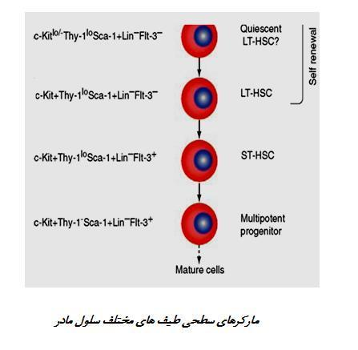
تصویر 14در اسلاید، lineage-specific markers به این صورت آمدهاند:
ردههای سلولی و نامگذاری CFUها در اسلاید شامل موارد زیر است:
| رده یا مسیر | نامگذاری CFU |
|---|---|
| Granulocyte, erythrocyte, megakaryocyte, monocyte | CFU-GEMM |
| Erythrocyte | CFU-E |
| Megakaryocyte | CFU-Meg |
| Monocyte | CFU-M |
| Granulocyte, monocyte | CFU-GM |
| Myeloid to basophil | CFU-BASO |
| Myeloid to eosinophil | CFU-EO |
| Myeloid to neutrophil | CFU-G |
| T lymphocyte | CFU-pre-T |
| B lymphocyte | CFU-pre-B |
نمودار کلی hematopoiesis از Pluripotential hematopoietic stem cell به Multipotential stem cells میرسد و سپس به یکی از دو شاخه میرود:
شاخههای myeloid شامل CFU-GM، CFU-Eo، CFU-Baso و CFU-MegE هستند. شاخهٔ lymphoid شامل Precursor T/NK cell و Precursor B cell است.
در ردهٔ CFU-GM، مراحل CFU-G و CFU-M و سپس Myeloblast و Monoblast نشان داده شدهاند. این مسیرها بهترتیب به شکل زیر ادامه مییابند:
در ردهٔ eosinophil، CFU-Eo به E. myelocyte، E. metamyelocyte، E. band و Eosinophil میرسد. در ردهٔ basophil، CFU-Baso به B. myelocyte و Basophil میرسد.
شاخهٔ اریتروئیدی از BFU-E به Polychromatophilic normoblast، Orthochromatophilic normoblast، Reticulocyte و Erythrocyte میرسد.
شاخهٔ megakaryocytic از CFU-Meg و Megakaryoblast به megakaryocyteهای بالغ و سپس پلاکتها مربوط است. متن نمودار در این بخش عبارتهای «Mature megakaryocyte» و «Megakaryocyte precursors» را بهکار میبرد.
در ردهٔ lymphoid:
نمودار، progenitor cells را در کنار سلولهای Morphologically recognizable و Mature cells نشان میدهد.
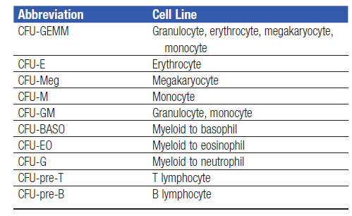
تصویر 15 تصویر 23
تصویر 23
در تصویر «Stem cells—Progenitor cells—Precursor cells—Mature cells» مسیرهای مختلف تمایز خونی نشان داده شدهاند. از یک سلول خونی انواع سلولها ساخته میشوند. برای مثال، گلبول قرمز هسته و mitochondria ندارد، اما neutrophil هستهٔ چندلوبه و گرانولهای مختلف دارد و با باکتریها مبارزه میکند؛ درحالیکه گلبول قرمز اکسیژن میرساند. ساختهشدن این انواع سلول از یک سلول، موضوع hematopoiesis است.
مغز استخوان کارخانهٔ تولید سلولهای خونی است و با این سرعت خون تولید میکند. این کارخانه خطهای تولید مختلفی دارد: خط تولید گلبول قرمز، خط تولید پلاکت و خطهای تولید eosinophil، basophil و monocyte. اگر این سلولها درست ساخته نشوند، بیماری ایجاد میشود. در این مسیر میتوان سرچشمهٔ کمخونیها و بدخیمیهای خون را دید. یادگیری درست hematopoiesis به توجیه و علتیابی کمخونیها و فهم بدخیمیهای خونی کمک میکند.
محل خونسازی در نوزادان و افراد بالغ متفاوت است. از هنگام تولد تا حدود دو سالگی، همهٔ استخوانها خونسازی میکنند؛ چون کانونهای خونسازی نامنظماند، نه اینکه خونسازی شدیدتر باشد. با منظمشدن کانونها، فضا برای خونسازی ایجاد میشود. در کتابها نوشتهاند کانونهای خونساز محدود و کم میشوند، اما نظر مدرس این است که کم نمیشوند، بلکه منظم میشوند. پس از منظمشدن، استخوانهای پهن و کوتاه و اپیفیز استخوانهای بلند خونسازی میکنند؛ از جمله sternum، vertebrae، استخوانهای لگن و proximal end استخوانهای بزرگ. این موارد با فهرست اسلاید از proximal end of large bones، sternum، vertebrae، axial skeleton و iliac crest همراهاند.
برای مطالعهٔ مغز استخوان باید به این استخوانها مراجعه کرد. مغز استخوان یک بافت است؛ همانطور که نمونهٔ خونِ گرفتهشده از رگ نمایندهٔ خون بدن در نظر گرفته میشود، نمونهای که از مغز استخوان برمیدارند نیز نمایندهٔ کل بافت در نظر گرفته میشود.
قبلاً برای کودکان زیر دو سال از استخوان درشتنی نمونهٔ مغز استخوان میگرفتند. در افراد بزرگسال، نمونهٔ استاندارد مغز استخوان از posterior iliac crest گرفته میشود. در لگن برجستگیها و فرورفتگیهایی وجود دارد و محل استاندارد نمونهگیری در پشت لگن است. نمونه را با needle میگیرند.
در تصاویر مربوط به حرکت سلولها، Homing to the bone marrow و Mobilization from the bone marrow، بههمراه Endothelial cells و Bone marrow cortex نشان داده شدهاند.
 تصویر 24
تصویر 24
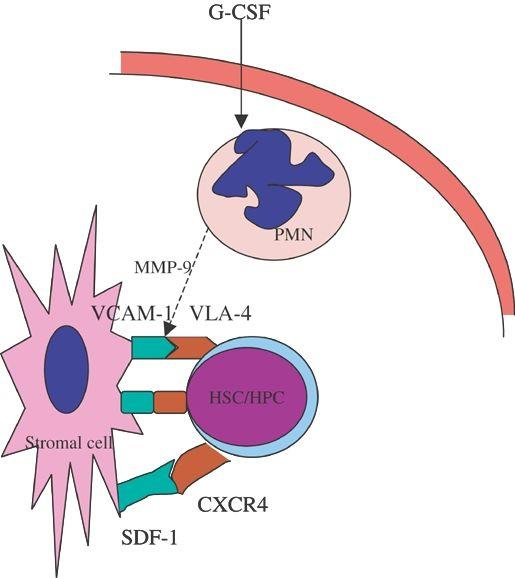
تصویر 25برای جداسازی LT-HSC، اسلاید به quiescent بودن، ماندن در G0، داشتن MDR و استفاده از 5-fluorouracil اشاره میکند. سلولهای HSC و زیرگروههایشان بر اساس markerهای سطحی از هم متمایز میشوند؛ فهرست markerهای پیشنهادی و فنوتیپهای LT-HSC، ST-HSC و multipotent progenitor در بخش شناسایی و زیرگروههای HSC آمده است.
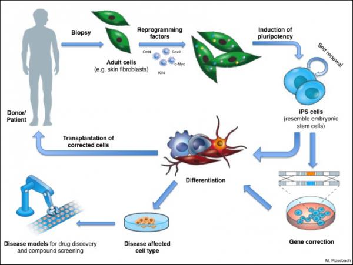
تصویر 22دانشجویان در مرحلهٔ آشنایی با هماتولوژی هستند و ممکن است هنوز به این درس علاقهمند نشده باشند. هماتولوژی بسیار بالینی است و بهنظر مدرس، شخصیت کاری دانشجو را به چالش میکشد؛ زیرا فرد نسبت به بیمار مسئولیت دارد و پیوسته با بیمار و کیس درگیر است. پس باید آن را جدی گرفت. همچنین توصیه میشود مطالعه به درسهای درسی محدود نماند و کتاب غیردرسی نیز خوانده شود.
یکی از دانشجویان کتاب «تصویر دوریان گری» را معرفی کرد.
و توسط خود استاد کتاب «هنر عشق ورزیدن» اثر دکتر اریک فروم نیز برای جوانها پیشنهاد شده است. فروم روانپزشک بود و تجربههای سالها کار و ملاقات با بیمارانی را که به مشاوره نیاز داشتند، در این کتاب آورده است. کتاب را باید دقیق و با تأمل خواند؛ جملهها را خط کشید و تکرار کرد تا در ذهن و زبان جا بیفتد و سپس وارد رفتار شود.
این کتاب اصولی را یاد میدهد که گاهی در فرهنگمان دربارهٔ آنها اشتباه میکنیم. برای مثال، میگوییم افراد باید غرور داشته باشند و این ارزشمند است، اما نباید مغرور باشند؛ بااینحال، گاهی بهمحض اینکه کسی غرور داشته باشد، میگوییم مغرور است. این قضاوت خودش کار درستی نیست. دربارهٔ دوستداشتن نیز میگوید کسی میتواند دیگری را دوست داشته باشد که ابتدا خودش را دوست داشته باشد. منظور خودخواهیِ مذموم نیست؛ منظور این است که فرد برای خود حریم و چارچوب داشته باشد و اجازه ندهد هرکسی به روح، روان، جان و جسم او آسیب بزند.
در فرهنگ ما چنین قالبهایی زیاد است. منظور این نیست که چون چیزی در فرهنگمان کم داریم سراغ این کتاب برویم؛ کتاب مجموعهٔ خوبی است تا سریع به این مطالب دسترسی پیدا کنید. دانشجویان اکنون از فضای مدرسه و نظمهای نادرست آن وارد دانشگاه شدهاند و سه سال دیگر، به امید خدا، وارد کار میشوند. در کنار توانمندی تخصصی، باید توانمندی روانی و اجتماعی هم پیدا کنند. گاهی لازم است علاوه بر گزارشی که برای بیمار مینویسیم، برای بیمار و همراهش توضیح بدهیم و گفتوگو کنیم. اگر بنیاد فکری فرد ضعیف باشد، این کار دشوار میشود؛ این موضوعها در جزوهها آموزش داده نشدهاند.
برای اینکه واقعاً تحصیلکرده باشیم و به جایگاه و ارزش موردنظر برسیم، نباید وقت را برای چیزهای بیهوده هدر بدهیم. موفقیت به مدیریت زمان بهدست خود فرد وابسته است. در مدرسه برای دانشآموز برنامه میگذاشتند، اما اکنون دانشجو باید خودش برنامهریزی کند؛ برای مثال:
این موارد را باید در برنامهٔ زندگی قرار داد. با چنین شناختی میتوان بعداً به دیگران عشق ورزید و محبت را منتشر کرد. حتی میتوان گلهای شاهپسند چندرنگی را که در محوطهٔ دانشکده دیدهاید نگاه کرد و رنگهایشان را نوشت. همدیگر را دوست داشته باشید و دوستی را منتشر کنید. ممکن است کسی بگوید فلانی اعصاب ندارد یا فلان است و بهمان؛ اما میتوان توانمندتر بود و از کانون دوستی و محبت، آرامش را منتشر کرد. خداوند به بشر محبتکردن را توصیه کرده است: تا میتوانید به همدیگر محبت کنید. این مطالب برای گفتوگو با دانشجویان مطرح شدهاند، نه از باب نصیحت.
| مرحله/ویژگی | توضیح |
|---|---|
| ترتیب کانونهای خونسازی | کیسهٔ زرده → کبد → مغز استخوان |
| خونسازی primitive | در کیسهٔ زرده؛ داخلعروقی؛ تولید فقط سلولهای اریتروئیدی |
| خونسازی definitive | در سایر ارگانها؛ تولید همهٔ ردههای سلولی |
| خونسازی پس از انتقال به کبد | خارجعروقی |
| وضعیت معمول کنونی | مغز استخوان تنها کانون خونسازی است، مگر در وضعیت پاتولوژیک یا بیماری |
| aorta-gonad-mesonephros | محل تولید stem cellهای جدید؛ در همان ناحیه خونسازی نیز انجام میشود، اما در حداقل میزان؛ stem cellها سپس به کبد مهاجرت میکنند |
| بخش/عامل | اجزا، منبع یا نقش ذکرشده |
|---|---|
| بخش سلولی ریزمحیط | stromal cells شامل سلولهای مزانشیمی، endothelial cell، osteoblast، osteoclast، macrophage، adipocyte، fibroblast و reticular adventitial cell |
| نقش stromal cells | مستقیماً در خونسازی نقش ندارند، اما از آن حمایت میکنند |
| بخش غیرسلولی | matrix، growth factorها، fibronectin و collagen؛ بخشی از فعالیت سلولهای استرومایی |
| fibroblast | ترشح collagen، fibronectin و hemonectin و فراهمکردن داربست برای HSC |
| scaffold | بستری پروتئینی که HSC روی آن قرار میگیرد تا بهصورت سهبعدی تحتتأثیر عوامل غیرسلولی باشد |
| erythropoietin (EPO) | از سلولهای peritubular کلیه؛ کمک به تولید گلبول قرمز |
| thrombopoietin (TPO) | از growth factorهای نامبردهشده؛ لازم برای تولید پلاکت |
| CXCL12 | osteoblastها آن را ترشح میکنند؛ به CXCR4 روی HSC متصل میشود و در نگهداشتن آن در محل نقش دارد |
| SCF ligand | از growth factorهای نامبردهشده؛ نقش دیگری در این بخش توضیح داده نشده است |
| angiopoietin | از عوامل غیرسلولی نامبردهشده؛ در کنار اشاره به angiogenesis، نقش آن امروزه مهم شده است |
| integrin | اتصال محکم |
| selectin | اتصال سست |
| CXCR4 و CXCL12 | اتصال CXCR4 روی HSC به CXCL12 محکم است؛ شکستن آن موجب جداشدن HSC از مغز استخوان و ورود به خون میشود |
| مرحله/نوع تقسیم | رویداد یا حاصل ذکرشده |
|---|---|
| Interphase (G1، S، G2) | کروموزومها باز و در حال استفادهاند |
| Prophase | تراکم کروموزومها؛ ازبینرفتن nuclear envelope؛ تشکیل spindle |
| Metaphase | ردیفشدن کروموزومها در صفحهٔ مرکزی سلول |
| Anaphase | تقسیم سانترومرها و حرکت chromatids بهسمت قطبهای مقابل |
| Telophase | بازشدن کروموزومها؛ شکلگیری nuclear envelope جدید؛ ناپدیدشدن spindle fibers |
| مرحلهٔ تقسیم cytoplasm در اسلاید | با عنوان «Cytokine» آمده است؛ cytoplasm به دو نیم تقسیم میشود |
| تقسیم متقارن | دو سلول شبیه یکدیگر؛ در مدل، یک SC میتواند دو سلول تمایزیافته یا دو SC تولید کند |
| تقسیم نامتقارن | یک سلول مانند سلول مادر و دیگری اندکی متمایزتر؛ در مدل، یک سلول تمایزیافته و یک SC |
| self-renewal | حفظ یک سلول مانند سلول مادر در کنار حرکت سلول دیگر بهسمت تمایز؛ با حفظ جمعیت سلولها همراه است |
| زیرگروه/مرحله | ویژگیهای ذکرشده |
|---|---|
| LT-HSC | سلول جوان؛ LT به معنی long-term؛ طول عمر زیاد در محیط آزمایشگاه و فعالیت درازمدت |
| ST-HSC | پس از LT-HSC؛ ST به معنی short-term و دورهٔ کوتاهتر |
| با کمی تمایز | c-kit یا CD117 نیز مثبت میشود |
| مرحلهٔ بعدی در توضیح طیف | علاوه بر CD34 و c-kit، FLT3 نیز مثبت میشود |
| با تمایز بیشتر | CD38 روی سلول ظاهر میشود |
| پس از طیف HSC | حرکت بهسمت ردههای مختلف خونی |
| Hoechst؛ در اسلاید Hoechest 33342 | هدف ذکرشده: هسته یا DNA؛ HSC رنگ را جذب نمیکند |
| Rhodamine-123؛ در اسلاید Rodamin-123 | هدف ذکرشده: میتوکندری؛ HSC رنگ را جذب نمیکند |
| زیرگروه | فنوتیپ ذکرشده |
|---|---|
| LT-HSC | c-Kit+ Thy-1lo Sca-1+ Lin− Flt-3− |
| ST-HSC | c-Kit+ Thy-1lo Sca-1+ Lin− Flt-3+ |
| multipotent progenitor | c-Kit+ Thy-1− Sca-1+ Lin− Flt-3+ |
| سلول/marker | ویژگی ذکرشده |
|---|---|
| LT-HSC | Positive: CD34، CD133 و CD59؛ Negative: Flt3 و HLA-DR؛ c-kit low |
| LT-HSC | quiescent، در G0 میماند و MDR دارد |
| CD34 | نقش در attachment و signaling؛ جلوگیری از ورود به cell cycle |
| C-kit | هنگام اتصال به C-kit ligand از apoptosis جلوگیری میکند |
| CD133 | با عنوان Pentaspan و نقش در membrane projection |
| CD164 | عبارت OCRشدهٔ «Logmentation»؛ نسبتدادن نقش جلوگیری از proliferation در اسلاید |
| ST-HSC | دارای FLT3 و C-kit |
| رده | marker ذکرشده |
|---|---|
| Erythroid | CD-71 / CD71 |
| Megakaryocytic | CD-41 |
| Granulocytic / Myeloid | CD-33 / CD33 |
| B-cell / B-lymphoid | CD-10 / CD10 |
| T-cell / T-lymphoid | CD-7؛ در فهرست lineage-specific markers بهصورت CD7/CDS |
| رده یا مسیر | نامگذاری CFU |
|---|---|
| Granulocyte, erythrocyte, megakaryocyte, monocyte | CFU-GEMM |
| Erythrocyte | CFU-E |
| Megakaryocyte | CFU-Meg |
| Monocyte | CFU-M |
| Granulocyte, monocyte | CFU-GM |
| Myeloid to basophil | CFU-BASO |
| Myeloid to eosinophil | CFU-EO |
| Myeloid to neutrophil | CFU-G |
| T lymphocyte | CFU-pre-T |
| B lymphocyte | CFU-pre-B |
| رده | مسیرهای نشاندادهشده |
|---|---|
| Neutrophil | CFU-GM → CFU-G → Myeloblast → N. myelocyte → N. metamyelocyte → N. band → Neutrophil |
| Monocyte/Macrophage | CFU-GM → CFU-M → Monoblast → Monocyte → Macrophage |
| Eosinophil | CFU-Eo → E. myelocyte → E. metamyelocyte → E. band → Eosinophil |
| Basophil | CFU-Baso → B. myelocyte → Basophil |
| Erythroid | BFU-E → Polychromatophilic normoblast → Orthochromatophilic normoblast → Reticulocyte → Erythrocyte |
| Megakaryocytic | CFU-Meg → Megakaryoblast → megakaryocyteهای بالغ → پلاکتها؛ نمودار همچنین «Mature megakaryocyte» و «Megakaryocyte precursors» را ذکر میکند |
| T-cell | Pro-T cell → T cell |
| NK-cell | Pro-NK cell → NK cell |
| B-cell | Pro-B cell → B cell → Plasma cell |
| مرحله یا شاخه | مسیرها و نامهای ذکرشده |
|---|---|
| آغاز نمودار | Pluripotential hematopoietic stem cell → Multipotential stem cells |
| شاخهٔ myeloid | Common myeloid progenitor (CFU-GEMM)؛ CFU-GM، CFU-Eo، CFU-Baso و CFU-MegE |
| شاخهٔ lymphoid | Common lymphoid progenitor؛ Precursor T/NK cell و Precursor B cell |
| سن/مرحله | محل یا الگوی خونسازی طبق توضیح درس |
|---|---|
| از تولد تا حدود دو سالگی | همهٔ استخوانها خونسازی میکنند؛ کانونها نامنظماند، نه اینکه خونسازی شدیدتر باشد |
| پس از منظمشدن کانونها | استخوانهای پهن و کوتاه و اپیفیز استخوانهای بلند خونسازی میکنند |
| محلهای نامبردهشده | sternum، vertebrae، استخوانهای لگن و proximal end استخوانهای بزرگ؛ همچنین iliac crest و axial skeleton در فهرست اسلاید |
| گروه/موضوع | محل یا روش نمونهگیری ذکرشده |
|---|---|
| کودکان زیر دو سال، در گذشته | استخوان درشتنی |
| افراد بزرگسال | posterior iliac crest، در پشت لگن |
| ابزار | needle |
| نوع نمونه | مغز استخوان بهعنوان نمونهای نمایندهٔ کل بافت در نظر گرفته میشود |
مسیر کانونهای خونسازی را در طول رشد بیان کنید و تفاوت خونسازی primitive و definitive را از نظر محل و ردههای سلولی تولیدشده توضیح دهید.
کانونها بهترتیب کیسهٔ زرده، کبد و مغز استخواناند. خونسازی کیسهٔ زرده primitive و داخلعروقی است و فقط سلولهای اریتروئیدی تولید میکند؛ خونسازی در سایر ارگانها definitive است و همهٔ ردههای سلولی را تولید میکند. پس از انتقال به کبد، خونسازی خارجعروقی است.
Homing و niche مغز استخوان را توضیح دهید و بیان کنید hematopoietic stem cell در خون چه میکند و در کجا خونسازی انجام میدهد.
Homing پدیدهای است که در آن hematopoietic stem cell مسیر بازگشت به محل خود را پیدا میکند. Niche یا microenvironment ناحیهای از مغز استخوان است که سلول پس از رسیدن به آن مستقر میشود و سلولهای محیط با ترشح و راهنمایی، آن را به مسیرهای مختلف هدایت میکنند. HSC میتواند در خون گردش کند و از نمونهٔ خون جدا شود، اما در خون خونسازی نمیکند؛ برای خونسازی به مغز استخوان میرود.
اجزای سلولی و غیرسلولی ریزمحیط مغز استخوان را شرح دهید و نقش fibroblastها و scaffold را بیان کنید.
بخش سلولی شامل stromal cells از جمله سلولهای مزانشیمی، endothelial cell، osteoblast، osteoclast، macrophage، adipocyte، fibroblast و reticular adventitial cell است. این سلولها مستقیماً خونسازی نمیکنند، اما از آن حمایت میکنند. fibroblastها collagen، fibronectin و hemonectin ترشح میکنند و scaffold پروتئینی میسازند که HSC روی آن قرار میگیرد. بخش غیرسلولی شامل matrix و growth factorها و ترکیباتی مانند fibronectin و collagen است؛ برخی growth factorها از منابع سلولی دیگر تأمین میشوند.
تفاوت تقسیم متقارن و نامتقارن hematopoietic stem cell را توضیح دهید و ارتباط آن را با self-renewal بیان کنید.
در تقسیم متقارن، دو سلول شبیه یکدیگرند؛ در مدل تقسیم متقارن، یک SC میتواند دو سلول تمایزیافته یا دو SC تولید کند. در تقسیم نامتقارن، یک SC و یک سلول تمایزیافته تولید میشود؛ یکی مانند سلول مادر میماند و دیگری اندکی متمایزتر میشود. این سازوکار با self-renewal همراه است و جمعیت سلولها را حفظ میکند.
مسیر کلی تمایز از hematopoietic stem cell تا سلول بالغ را شرح دهید و دستکم سه مسیر یا ردهٔ خونیِ نشاندادهشده را نام ببرید.
مسیر کلی از Pluripotential hematopoietic stem cell به Multipotential stem cells و سپس به progenitorها، precursorها و Mature cells میرسد. برای نمونه، مسیر اریتروئیدی از BFU-E به normoblastها، Reticulocyte و Erythrocyte میرسد؛ مسیر neutrophil از Myeloblast و مراحل N. myelocyte، N. metamyelocyte و N. band به Neutrophil میرسد؛ و مسیر lymphoid شامل Pro-T cell به T cell، Pro-NK cell به NK cell و Pro-B cell به B cell و سپس Plasma cell است.
کدام گزینه ترتیب کانونهای خونسازی در طول رشد را درست بیان میکند؟
ترتیب بیانشده در درس کیسهٔ زرده، کبد و سپس مغز استخوان است.
کدام ویژگی برای خونسازی primitive در کیسهٔ زرده ذکر شده است؟
خونسازی کیسهٔ زرده داخلعروقی و محدود به تولید سلولهای اریتروئیدی توصیف شده است.
Hematopoietic stem cell در فرآیند homing چه میکند؟
Homing به یافتن مسیر بازگشت hematopoietic stem cell به محل خود اشاره دارد.
کدام گزینه دربارهٔ بخش سلولی ریزمحیط مغز استخوان درست است؟
توضیح درس این است که stromal cells مستقیماً در خونسازی نقش ندارند، اما از آن حمایت میکنند.
کدام جفت، مولکول و نوع اتصال را مطابق توضیح درس درست به هم مرتبط میکند؟
برای ایجاد اتصال محکم به integrin نیاز است؛ selectin در توضیح درس اتصال سست دارد.
با تمایز بیشتر در طیف HSC، کدام marker در توضیح درس روی سلول ظاهر میشود؟
در توضیح طیف HSC، CD38 با تمایز بیشتر روی سلول ظاهر میشود.
کدام گزینه مسیر اریتروئیدیِ نشاندادهشده را درست ادامه میدهد؟
مسیر اریتروئیدی از BFU-E آغاز میشود و از دو مرحلهٔ normoblast به Reticulocyte و سپس Erythrocyte میرسد.
نمونهٔ استاندارد مغز استخوان در افراد بزرگسال از کجا گرفته میشود؟
محل استاندارد نمونهگیری بزرگسالان posterior iliac crest است.
کدام گزینه Yamanaka factors ذکرشده در اسلاید را کاملتر و درستتر فهرست میکند؟
اسلاید Yamanaka factors را شامل Oct4 (Pou5f1)، Sox2، cMyc و Klf4 میداند.
در توضیح درس، erythropoietin و thrombopoietin بهترتیب با کدام تولید مرتبطاند؟
erythropoietin به تولید گلبول قرمز کمک میکند و thrombopoietin برای تولید پلاکت لازم است.
ادیتور: ویرایش آکادمیک خودکار (Layer 5)
منابع استفادهشده:
برآورد تقریبی تکمیل محتوا: حدود ۹۵٪